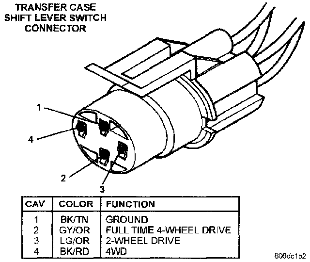

Operation CHARM
: Car repair manuals for everyone.
Русский
Home
>>
Jeep
>>
1997
>>
Grand Cherokee 4WD L6-4.0L VIN S
>>
Repair and Diagnosis
>>
Transmission and Drivetrain
>>
Transmission Control Systems
>>
Sensors and Switches - Transmission and Drivetrain
>>
Sensors and Switches - Transfer Case
>>
Four Wheel Drive Selector Switch
>>
Diagrams
Four Wheel Drive Selector Switch: Diagrams
